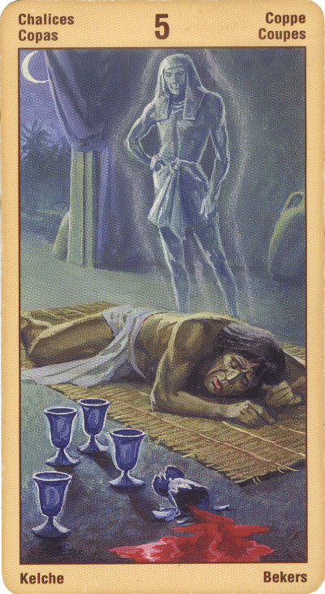

Пятёрка Кубков
Значение: Нет, жизнь не окончена, говорит эта карта: горе ваше действительно велико, и потери значительны, но впереди будут еще и радости, и приобретения. Нужно лишь оглянуться, перестать размышлять о своем горе – и оно уйдет в прошлое, и счастливое будущее откроется перед вами.
Вы можете испытывать ощущение, что у вас что-то отобрали, помимо вашей воли, и в результате вас охватила тоска или безысходность. Вы можете испытывать чувство тяжелой утраты или разочарования, вам может казаться, что вас предали. В качестве альтернативы, не исключено, что в гневе вы совершили те или иные поступки и сейчас внезапно осознали их последствия. Или же раньше вы боялись оказаться брошенным и сейчас ваши страхи стали реальностью. Не исключено, что для вас пришло время перенести фокус своего внимания с прошлого в будущее, с того, что вы потеряли, на те дары, которые преподносит вам жизнь. Избавившись от безысходности, ваше сердце будет в состоянии открыться вновь. Традиционно, считается, что эта карта указывает на завещания и наследство, т. е. на дары, которые оставили нам те, кого мы потеряли.
Иногда эта карта означает избавление от заблуждений. Именно здесь могут "всплыть" все недоработки в построении отношений, все недомолвки.
Ловушка- пребывать в своей печали. Кто смотрит лишь назад, не заметит любви, даже если она совсем рядом.
В перевернутом положении карта означает: новый взгляд на жизнь, надежда, обнадеживающие известия, приятные переживания, новые союзы, связи, возвращение к старым друзьям, воссоединение.
Отрицательное толкование: скорбь, утрата, разрыв отношений, несчастливый брак.Фиктивный брак, фальшь,отказ от всего.